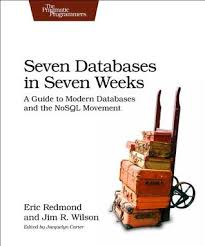
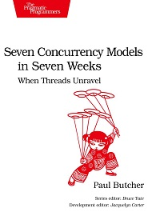

May Picks - Seven Databases, Seven Concurrency Models
These books had been on my list for a while, I finally found an appropriate time to dive in.
Seven Databases In Seven Weeks

I've had experience with three of the databases in this book, Postgres, Redis, and Mongo. The others featured in this book, Riak, CouchDB, HBase, Neo4j are not as popular in the wild but still good to have in your toolbelt.
I was most intrigued by Riak with its simple configuration of clusters and read/write consistency, and on a per-bucket basis. It also supports mapreduce.
HBase I have seen around the web, but did not know that it powers core services at Facebook, Twitter, eBay, and others. This is the database for Big Data problems.
Seven Concurrency Models In Seven Weeks

A lot of the excitement around functional programming today is because it simplifies concurrency. This book explains how that's so, as well as the models of Go and Erlang.
This is an essential text for all engineers. From the humble beginnings of concurrency (threads/locks), to functional programming, to better approaches (CSP), and the currently largest-scale concurrency model (MapReduce). Java, Clojure, and Elixir are used in the examples.